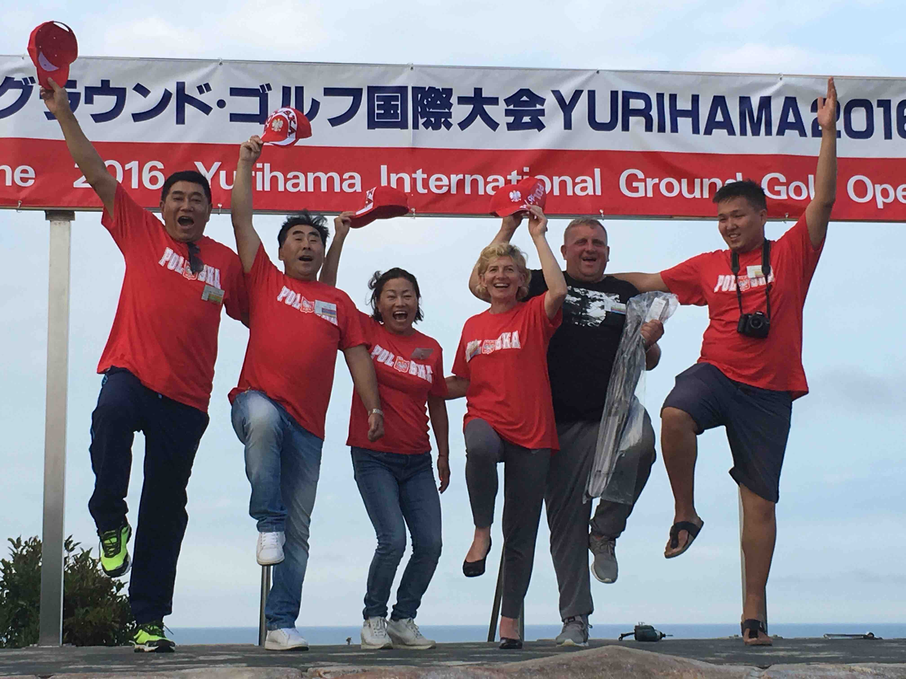
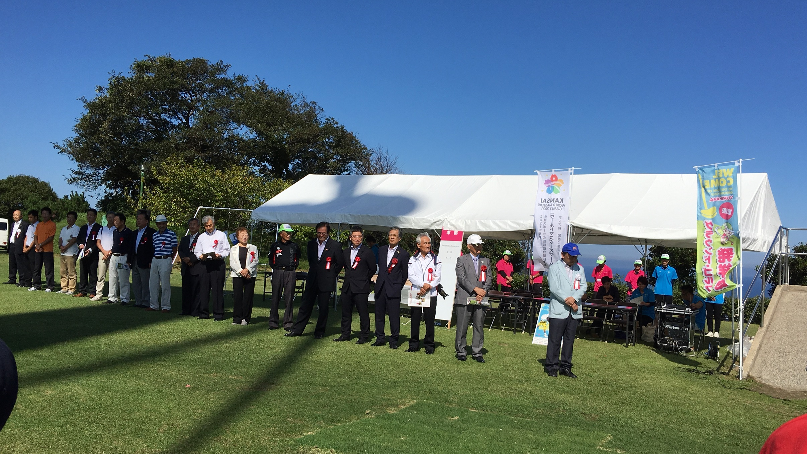
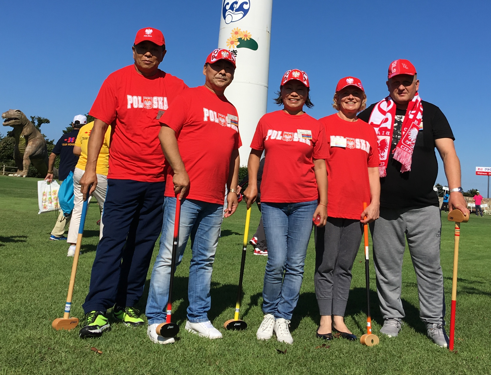
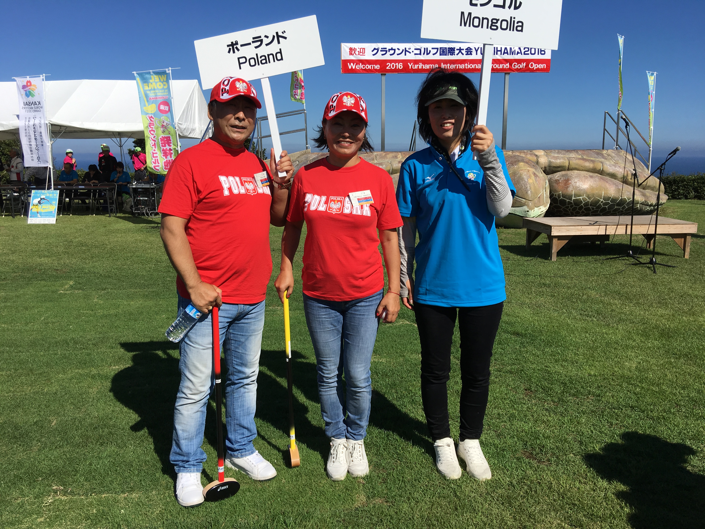
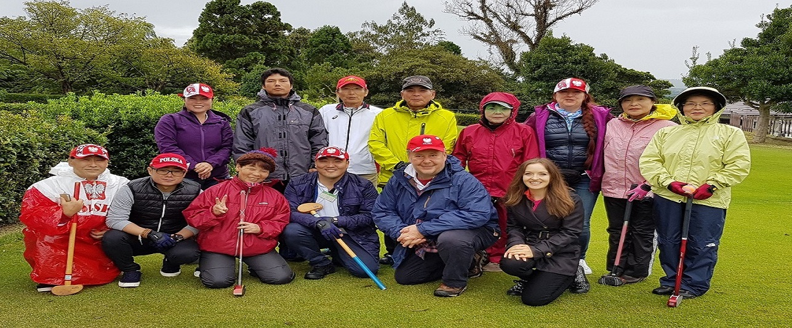
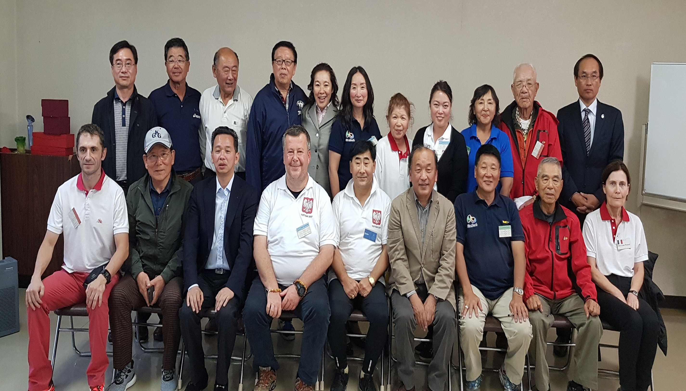

Ground Golf do Polski sprowadził dr Och Bataa. Pierwszy oficjalny mecz na terenie Polski odbył się w
2017 roku (dodać zdjęcie znad Wisły)
.jpg)
Some text
Some text
Some text
Some text
Jednakże już w 2016 roku reprezentanci Polski z dr. Ochem Bataa (który zorganizował grupę graczy)
uczestniczyli w turnieju Ground Golfa w Japonii (dodać zdjęcia).

Nasza drużyna na mistrzowstwach w Japonii 2016

Uroczyste otwarcie mistrzoswstw w Japonii 2016

Nasza drużyna na mistrzowstwach w Japonii 2016

Nasza drużyna na mistrzowstwach w Japonii 2016
Jesienią 2016 roku narodził się pomysł powołania Klubu Ground Golfa na terenie Polski. Grupę powołał
dr. Och Bataa a w grupie byli Erdenehimeg Nomondalai, Amar Och, Edwin Truksa, (które nazwiska
dodać?) Na wiosnę 2017 roku pod przewodnictwem dr. Och Bataa zebrała się grupę sympatyków celem
powołania stowarzyszenia Klub Sportowy AGI. Która to grupa odbyła swoje pierwsze zebranie w dniu
12 czerwca 2017 roku w al. Ujazdowskich w Warszawie (dodać zdjęcia).
Some text
Some text
Some text
Some text
Wiosną i latem 2017 roku odbywały się już regularnie mecze Ground Golfa w Konstancinie-Jeziornej,
w Wyszkowie i innych miejscach.
W dniu 20 września 2017 roku Klub Sportowy AGI został zarejestrowany przez Sąd Rejonowy dla m.st. Warszawy w Warszawie, XIII Wydział Gospodarczy Krajowego Rejestru Sądowego. W Październiku 2017 roku Polska drużyna reprezentowała nasz kraj na Mistrzostwach Ground Golfa w Japonii. Jeden z reprezentantów Polski zdobył dwa Złote Puchary. (Skład drużyny – czy ludzie się zgodzą aby napisać i zdjęcia)
Nasza drużyna na mistrzowstwachw Japonii 2017

Nasza drużyna na mistrzowstwach w Japonii 2017
.jpg)
Uroczyste otwarcie mistrzoswstw w Japonii 2017

Inni uczęstnicy Pucharu w Japonii 2017
Cele działania klubu
1. Rozwijanie róznych form kultury fizycznej;
2. Wspieranie rozwoju kultury fizycznej a zwłaszcza propagowanie sportu Ground Golf;
3. Integrowanie miedzypokoleniowe celem aktywizowania wszystkich grup wiekowych;
4. Integrowanie wszelkich srodowisk a w szczególnosci: uczniowskich, rodzicielskich i nauczycielskich na terenie swego działania;
5. Prowadzenie aktywnosci w sferze kultury fizycznej, w dziedzinie rekreacji i rehabilitacji ruchowej;
6. Podejmowanie działan na rzecz zrozumienia i poszanowania roznych wrazliwosci kulturowych i cywilizacyjnych poprzez sport;
7. Podejmowanie działan dla zapewnienia rozwoju psychofizycznego, wychowania, doskonalenia uzdolnien, umiejetnosci i sprawnosci, zachowania zdrowia człowieka,w tym w szczególnosci u dzieci i młodziezy, a takze krzewienie wiedzy i utrwalania zwyczajów w tym zakresie;
8. Planowanie i organizowanie zycia sportowego członków klubu w oparciu o możliwosci obiektowe i sprzetowe;
9. Uczestniczenie w imprezach sportowych organizowanych na terenie polski jak i międzynarodowych;
10. Organizowanie zajec sportowych w celu wszechstronnego rozwoju sprawnosci fizycznej i umysłowej, a takze w celu zapobiegania patologiom społecznym;
11. Organizowanie róznorodnych form współzawodnictwa sportowego;
12. Realizacja zadań z zakresu krajoznawstwa oraz wypoczynku dzieci i młodziezy, a także promowanie ekologii i podejmowanie działan o znaczeniu ekologicznym, jako sport służący ochronie srodowiska;
13. Realizacja zadan z zakresu profilaktyki uzaleznien poprzez sport;
14. Współudział w rozbudowie i utrzymaniu urzadzen i sprzetu sportowego;
15. Szkolenie trenerów ground golfa, przygotowywanie całego zaplecza tej dyscypliny sportowej;
16. Organizowanie zawodów sportowych, happeningów, imprez o znaczeniu regionalnym, krajowym i miedzynarodowym;
 Facebook
Facebook Napisz namCopyright © 2018 All rights reserved
Napisz namCopyright © 2018 All rights reserved